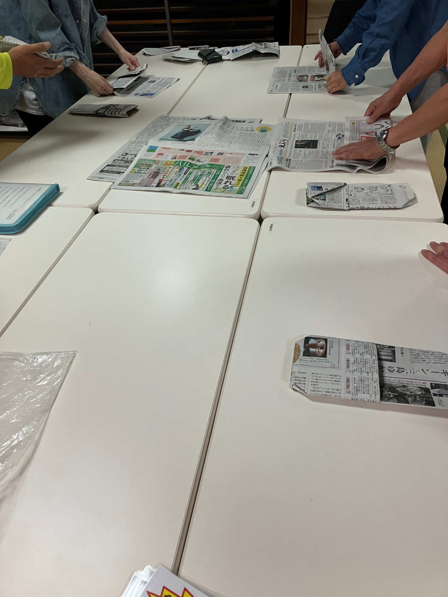

5月30日に地域の小学3年生向けに行う防災授業に向けて、まな防災の練習会に参加してきました。当日、子どもたちにうまく教えられるよう、まずは自分たちで体験しておこう、という準備の場です。

▲ 授業本番に向けて、大人たちが先に練習
テーブルに新聞紙を広げて、折り方を一つひとつ確認しながら進めていきます。「こう折るんですか？」「もう一回見せてください」と声が上がるなど、和気あいあいとした雰囲気の中で学ぶことができました。
今回練習したのは、この3つです。
大人でも「あれ、どっちに折るんだっけ？」となる場面があるくらい、意外と奥が深い。これを子どもたちに教えるとなると、より丁寧に説明できるよう準備しておかないといけないなと思いました。
5月30日の授業本番がうまくいくよう、しっかり頭に叩き込んでおきます！